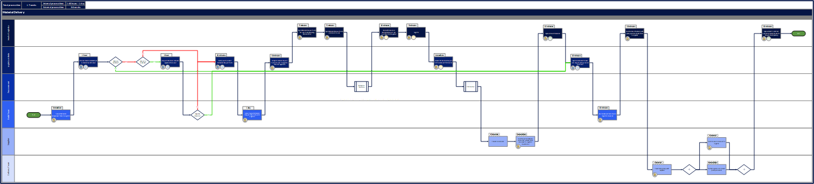
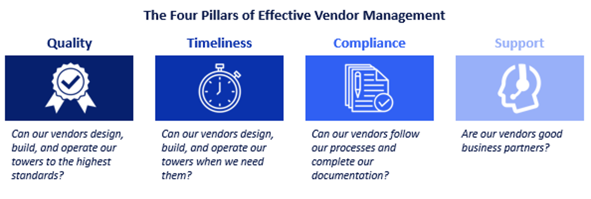

The how-to guide for standardizing towerco processes
Stonewater employs a multi-step approach for implementing operational excellence. Standardized process flows are essential to this approach because they provide employees with visual guidance for executing business activities and provide management with insights into internal and external cycle times, roles, critical and non-critical documents, finance and procurement approvals, and systems interactions
Creating clear, usable, and living process flows is the first step in determining the operational delivery requirements faced by an infrastructure company across its businesses and geographies. This involves structuring processes in accordance with the Sell-Design-Build-Operate framework so the requirements for constructing towers, DAS, small cells, and fiber are available to rank-and-file employees and sharable with vendors, as necessary. Site acquisition, construction, and maintenance vendors can improve their services substantially when they agree with the specifications for their work, and the reports, data, and metadata they generate are standardized as part of the process mapping exercise. Such data become crucial when it comes time for management teams to reduce costs by decreasing deployment cycle times.
1
Chart the As-Is State
The first step in developing process maps is creating or referencing a process list and developing as-is process maps for each core process that capture processes as teams perform them. While capturing an accurate as-is state can be an extensive effort, it produces critical outputs. Primarily, the as-is state will identify the pain points and bottlenecks and will create a detailed view of the business for management. Understanding what processes require the most effort to improve early on will spare the need for blanket improvement, and ultimately save time and effort.

2
Build Frameworks
With an understanding of the as-is state, the next step in creating effective process maps is to identify and prioritize pain points and bottlenecks, such as circular approvals, manual systems, and unnecessary actions to serve as a roadmap. While some firms believe quick fixes solve process ills, Stonewater understands that lasting change requires purposeful action. Beginning with the processes that have the most urgent needs and “quick wins”, Stonewater develops frameworks to better understand why end-users need a given process and how to run it effectively.
Our frameworks are tailor-made to the process and company at hand, as no two organizations are the same. Simple and thoughtful governing frameworks for core processes will keep a process improvement effort focused on improving results. Moreover, frameworks allow easy export of processes to other products and geographies, enabling conceptual process standardization across the company.

3
Foster Consensus
The next objective is to build consensus for process frameworks among end-users. When users have input and are invested in their work, towercos create living processes that last. Often, enabled end-users operating under a guiding framework will create lean, effective processes with little to no additional assistance. To maximize stakeholder engagement, however, leadership must delegate authority and empower middle management to take ownership of their processes.
4
Create Change
With frameworks in hand and stakeholders enabled, towercos can begin the heavy lifting of process improvement. Developing new processes can take months and is the longest step in the process standardization journey, but it is accelerated by the planning and thought done in previous steps. During this phase, Stonewater regularly updates the as-is process map to create the to-be process map – the guiding document for socializing and enforcing standardized processes. During this stage, Stonewater does not focus purely on cycle time reduction overall (this comes during the process automation stage), rather on the process mechanics. We verify that each step of the process is in line with the guiding frameworks and thus moves the towerco toward a target state.
5
Socialize
Once Stonewater and the end-users finalize the to-be process maps and secure leadership buy-in (our clients’ operational leaders personally sign each new process flow), towercos socialize and train employees on new processes. This is the make-or-break stage of process standardization. Fortunately, a towerco’s early efforts to create clear frameworks and build consensus among end-users will smooth the way for process adoption. This is a dynamic stage; Stonewater schedules regular check-ins with users to make sure new processes run smoothly, and to address any pain points as they appear. Going forward, a PMO must have centralized control over processes maps and employ a process management methodology to manage changes and updates.
6
Automate
After the initial framework-driven processes are in place and functioning, a towerco can turn its attention to reducing cycle times through automation. While some processes can function smoothly and quickly without assistance from digitization and purpose-built software, automating many processes (particularly relating to administration and data management) can cut cycle times to near zero. Using the process frameworks and new process maps as a guide, Stonewater works with towerco IT departments and third-party vendors to create and implement the right technological solutions. As towercos automate processes, and the resulting cycle time data become consistent and trustworthy, management teams can begin to engage in the real-time, data-driven decision making that is expected of 21st-century leaders.
Interested in learning more? Find our insights for “The Structured Approach to Post-Merger Integration” here.